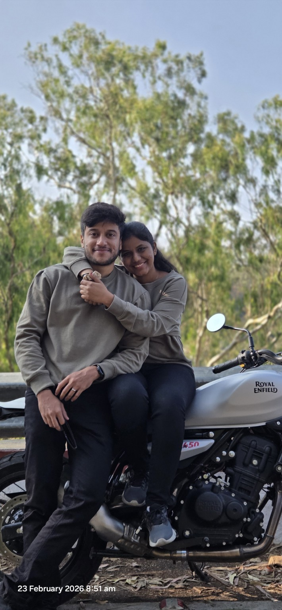
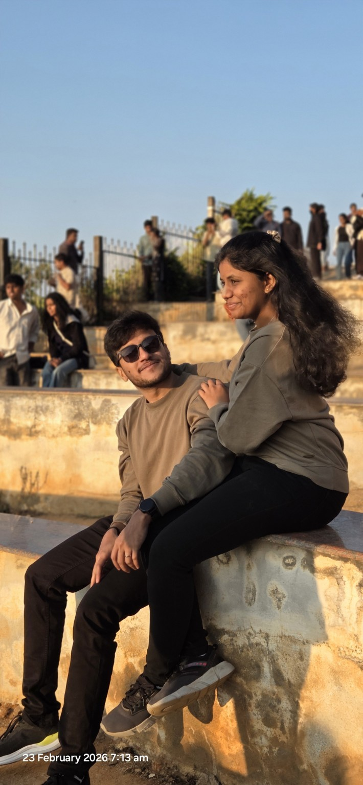
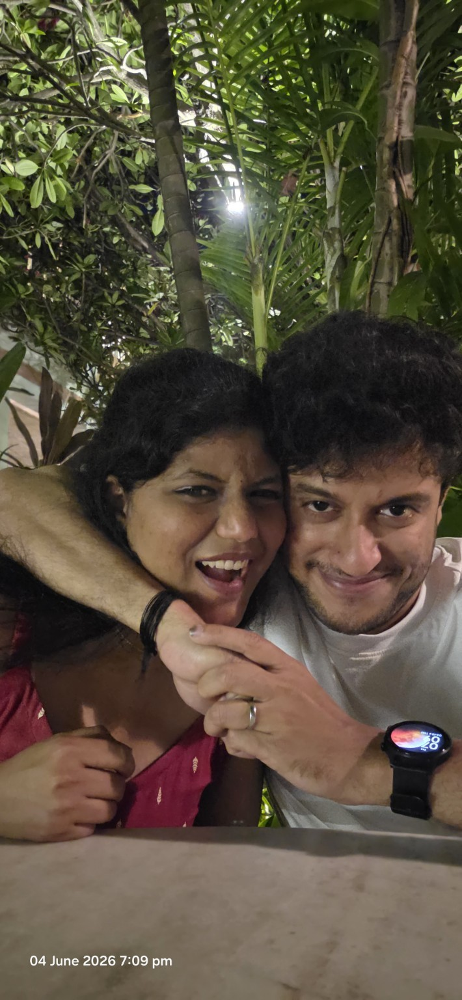
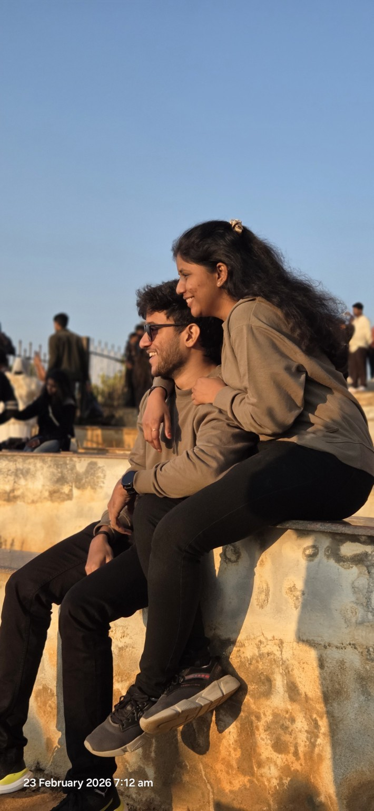
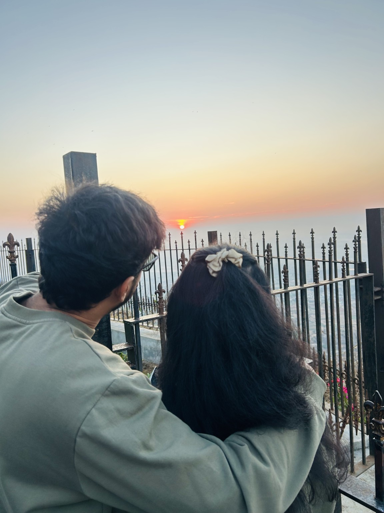
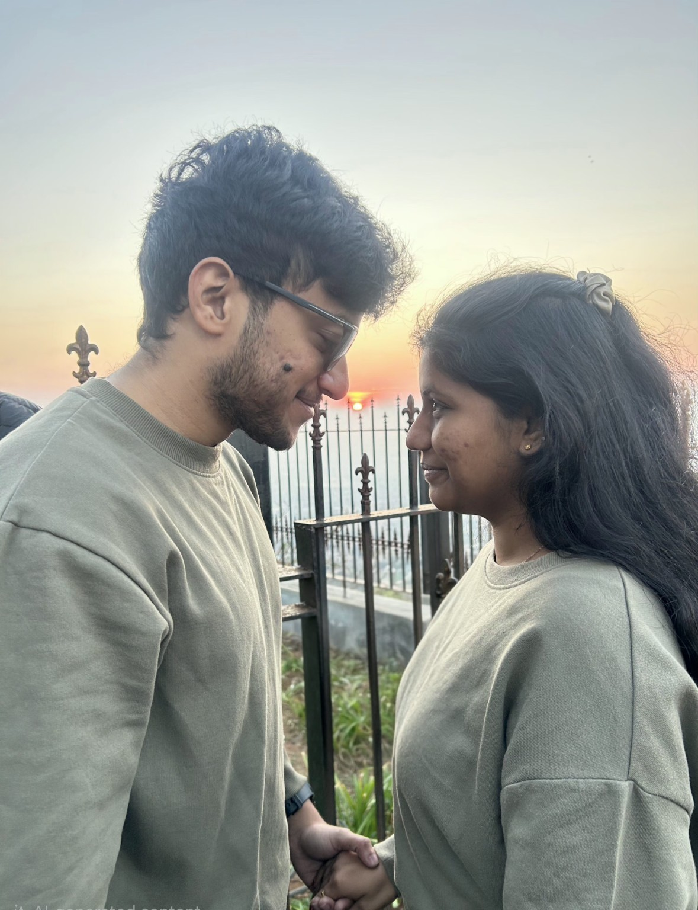
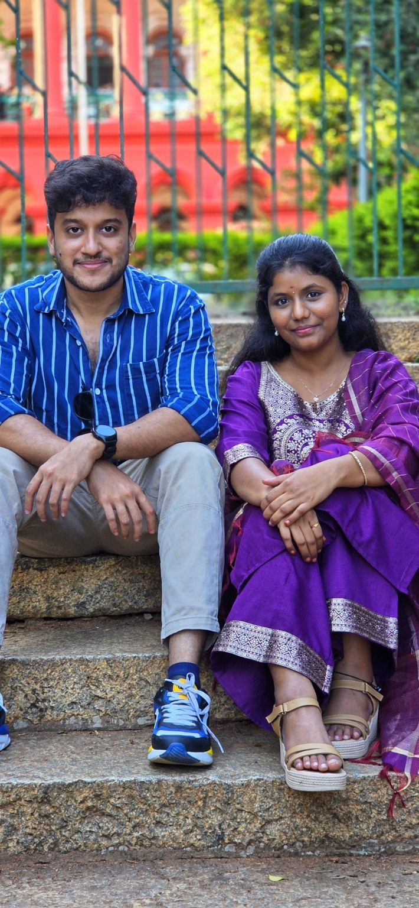

LATE NOVEMBER 2024
01
The conversations began
Somewhere around the end of November 2024, we started talking. Little did I know those conversations would become some of my favourite moments.
A little corner of the internet, made just for you
Somehow, out of all the people in this world…
we found each other.
OUR STORY
I don't know exactly when you became such a big part of my heart. Maybe it was in one of our endless conversations. Maybe it was in one of your unexpected little surprises. Or maybe it was simply every time I saw you smile.
Somewhere around the end of November 2024, we started talking. Little did I know those conversations would become some of my favourite moments.
Chennai. Accenture office. 27 July 2025. A date that quietly became a chapter in our story that I never want to forget.
From morning rides to beautiful places, everything somehow feels better when you're sitting beside me.


Your laugh. My stupid jokes. Your smile. Those ordinary moments that somehow become extraordinary simply because they're with you.

I usually don't get birthday wishes right at 12. But you called me like an angel. I remember sitting there with tears in my eyes, feeling incredibly lucky. Then there are your unexpected surprises — a keychain, a chocolate, little things that say much more than their size ever could.




A LETTER FOR YOU
If I could go back and tell the version of me who first started talking to you what was coming, I don't think he would believe me.
He wouldn't believe that one person could become the person he looks for first when something good happens. The person whose smile can change an entire day. The person whose voice at midnight can leave him sitting quietly with happy tears.
You have given me memories I didn't know I needed. The rides, the conversations, the laughs, the little surprises, the quiet moments, and all those times when simply being next to you felt like enough.
I don't promise a life where every day is perfect. I promise something better: that on the difficult days, I'll still choose you. On the ordinary days, I'll still find reasons to make you smile. And on the happiest days, I'll want you standing beside me, laughing at me like you always do.
I want more morning rides. More late-night talks. More silly arguments. More unexpected gifts. More photographs. More places. More birthdays. More ordinary Tuesdays that become special because you're there.
I don't just want more memories with you.
I want a lifetime of them.
So after everything we've already shared, I have one question left. And this time, I'm asking it with my whole heart.
BEFORE THE QUESTION
ANDAL, THIS IS FOR YOU
I choose you. Today, tomorrow, and all the ordinary beautiful days in between.
There is only one correct answer. 😌
SHE SAID YES
And just like that… my favourite person has agreed to be my favourite person for the rest of my life. 🥹
Sreerag + Andal · one beautiful lifetime